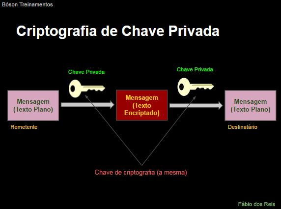
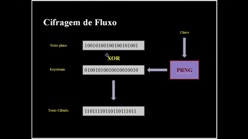
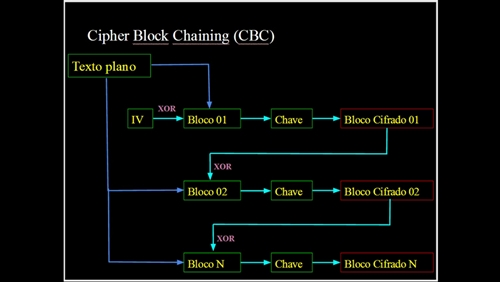

Aprenda Criptografia e Segurança
Tudo sobre Criptografia e Segurança Parte 1
Introdução e Princípios Básicos
Criptografia é o estudo a aplicação de técnicas para comunicação e armazenamento seguro de dados em sistemas computacionais e outros como telefonia e televisão.
A palavra "criptografia" vem do grego "kyptós" e "graphein", significando escrita oculta.
Para estudar criptografia, é importante conhecer os termos chave, veja alguns deles:
- Texto Plano/Puro: Dados não-encriptados (não precisa ser literalmente textos, mas tudo que possa ser visto).
- Texto Cifrado: Dados encriptados (mesmo caso acima, não precisa ser literalmente textos).
- Chave (Key): Dados utilizados para encriptar um texto plano, ou desencriptar um texto cifrado.
- Algoritmo de Criptografia: Método matemático empregado para encriptar ou desencriptar dados com o uso das chaves de criptografia.
Encriptação é a conversão de dados legíveis para um formato ilegível (texto cifrado) por pessoas não-autorizadas, usando uma chave e um algoritmo criptográfico. Seu objetivo é proteger a privacidade ao armazenarmos dados ou trocarmos informações de outras pessoas. O receptor da mensagem encriptada pode decriptá-la e ler seu conteúdo, no formato original.
Desencriptação é o processo inverso da encriptação, ou seja, a transformação de dados encriptados (ilegíveis em dados legíveis, usando uma chave e um algoritmo criptográfico (cifra)).
Criptoanálise é o processo de transformação de dados cifrados (encriptados) em dados legívels (decriptados) sem que se conheça a chave de encriptação. Portanto, trata-se de "quebrar" a encriptação dos dados para obter acesso ao conteúdo das mensagens, porém, com o intuito de descobrir falhas nos algoritmos para torná-los mais seguros, validá-los ou descartá-los (por exemplo, criptografia wep). Criptologia é o estudo científico da criptografia (arte de criar mensagens cifradas) e da criptoanálise (arte de desvendar as mensagens cifradas).
Esses são os requerimentos de segurança em comunicações:
- Autenticação
- Integridade
- Confidencialidade
- Não-Repúdio
Autenticação é um princípio importante. Ela assegura que a mensagem foi realmente originada pelo remetente, e não por outra pessoa.
Integridade é outro conceito importante, que é o que diz respeito ao conteúdo as informações trocadas entre transmissor e receptor. Deve-se garantir que o conteúdo da mensagem chegue íntegro ao seu destino, ou, seja, que não seja alterado de nenhuma forma no meio do caminho.
Confidencialidade significa que a informação não está disponível para pessoas e processos que não tenham autorização para acessá-la e utiizá-la.
Não-Repúdio também é importante, já que deve-se também evitar que uma mensagem, após ter sido enviada, seja repudiada pelo transmissor (ele não poderá negar que a transmitiu). Para isso podemos utilizar, por exemplo, assinaturas digitais, que estudaremos mais pra frente.
Tipos - Simétrica, Assimétrica e Funções de Hash
Basicamente, há três tipos de técnicas de criptografia:
- Criptografia de Chave Privada ou Simétrica.
- Criptografia de Chave Pública ou Assimétrica.
- Funções de Hash.
A criptografia de chave privada utiliza uma única chave. O emissor utiliza essa chave para encriptar a mensagem, e o receptor utiliza a mesa chave para decriptá-la (chave compartilhada - shared key). Por utilizar a mesma chave na encriptação e decriptação, trata-se de uma técnica de criptografia simétrica (que é usada no modo stream. Exemplos de algoritmos conhecidos são DES, 3DES, Blowfish, AES, OTP (One-Time-Pad)).
Veja abaixo como funciona a chave privada (simétrica):
Na criptografia de chave pública, usamos duas chaves distintas, de modo a obtermos comunicação segura através de canais de comunicação inseguros. Trata-se de uma técnica de criptografia assimétrica pelo fato de usar um par de chaves diferentes (onde um transmissor e receptor possuem chaves diferentes, com tamanhos que variam entre 512 e 2048 bits, usadas em modo de bloco. Exemplos de algoritmos são DSA, RSA e GPG).
Veja abaixo como funciona a chave pública (assimétrica):

Cada participante possuí uma chave pública e uma privada. A chave privada é secreta, e só o proprietário a conhece, ao passo que a chave pública é compartilhada com todos que se comunicarão conosco. Por exemplo: Fábio quer se comunicar com Ana de forma segura, então Fábio encripta a mensagem com a chave pública de Ana, de modo que a mensagem só pode ser aberta usando-se a chave privada de Ana (que só ela possuí).
A técnica de hash não utiliza uma chave como as técnicas vistas anteriormente, utiliza um valor de hash de tamanho fixo, o qual é computado sobre o texto plano. São usadas para verificar a integridade dos dados para garantir que não tenham sido inadveridamente alterados. Verificações de senha podem usar funções de hash também, assim como downloads de arquivos como ISO (alguns exemplos de funções de hash utilizadas atualmente incluem são MD5, SHA1 e SHA256).
Basicamente, a definição é isso:
A chave pública (assimétrica) é compartilhada a outros usuários para que possa ser verificadas as assinaturas e integridade de arquivos e mensagens, ou criptografar arquivos e mensagens para que possam ser abertos pela sua chave privada.
Já a chave privada (simétrica) deve ser guardada com você, e é usada para criptografar e assinar arquivos e mensagens, além de descriptografar mensagens encriptadas com sua chave pública.
E o hash é um valor de tamanho fixo, geralmente em hexadecimal, computado sobre uma frase ou arquivo, que sempre gerará o mesmo valor, desde que não seja alterada absolutamente nada nessas mesmas frases ou arquivos, por mínimo que seja.
Veja nesse site o uso de alguns dos principais algoritmos de criptografia, desde a Cifra de César até os Hashs, além de conversão de números e várias outras coisas: https://www.onlinecryptographytools.com/
Revisão e Operações Lógicas AND, OR, NOT e XOR
Uma operação lógica é uma operação em álgebra booleana (com valores binários - bits), que podem ser 0 ou 1.
As operações lógicas mais comuns são o AND, OR, NOT e XOR. No caso, o true e false são tratadas como 1 e 0, respectivamente.
A operação XOR possuí uma propriedade importante, de modo que é reversível, muito utilizada em algoritmos criptográficos.
Por exemplo:
| AND | OR | XOR | |
|---|---|---|---|
| Primeiro: | 1001 | 1001 | 1001 |
| Segundo: | 0101 | 0101 | 0101 |
| Resultado: | 0001 | 1101 | 1100 |
PS: O NOT seria apenas a inversão, por exemplo, 1001 viraria 0110.
Web Crawler e Arquivo robots.txt
Um webcrawler (rastreador web) é um bot (robô) da internet que navega sistematicamente pelas páginas da web com o propósito de indexá-las. Também é conhecido pelo nome de Web Spider.
O webcrawler utiliza uma lista inicial de URLs para visitar, que são conhecidas como seeds (sementes). Ele identifica todos os hyperlinks nessas URLs, e os adiciona à lista de URLs à visitar. As páginas visitadas são copiadas para serem processadas posteriormente com o intuito de indexá-las. Os motores de busca utilizam webcrawlers para manterem seus bancos de dados atualizados. Um exemplo é o webcrawler usado pelo Google para indexar as páginas da web para construir a busca do mesmo, o Googlebot. Nesse endereço é possível ler as informações sobre esse webcrawler: https://support.google.com/webmasters/answer/182072
Um arquivo robots.txt restringe acesso dos robôs webcrawlers a um site. Os webcrawlers, antes de indexar um novo site descoberto, verificam se ele possui um arquivo robots.txt que os impeçam de acessar determinadas páginas. Nesse website encontramos informações sobre como criar e utilizar um arquivo robots.txt: https://support.google.com/webmasters/answer/156449
A sintaxe de um robots.txt costuma ser essa:
# Tudo com hashtag é comentário.
User-agent: *
Disallow: /
No caso acima, ambos são coringas para bloquear geral, no User-agent colocamos os sites de busca especificados, e em Disallow, as pastas que não devem ser indexadas.
Esse site te ajuda a criar robots.txt: http://www.marketingdebusca.com.br/robots-txt/
O que é a Deep Web
Antes de entendermos a Deep Web, precisamos entender a Surface Web (Web da Superfície), que trata-se da web que conhecemos, cujos sites são indexados normalmente pelos motores de busca, como o Google, Yahoo!, Bing, etc. Um site como https://www.facebook.com/ é um exemplo de site que pertence a Surface Web.
A Deep Web se refere ao conteúdo da web que não é visível na Surface Web, conteúdo esse não-indexado pelos mecanismos de busca convencionais. Acredita-se que a mior parte da informação da web esteja em sites que são gerados dinamicamente, os quais não são encontrados usando-se os mecanismos de busca comuns. Geralmente terminam com .onion ao invés de .com.
Na Deep Web, as páginas são dinâmicas, e são isoladas (portando, inacessível ao webcrawlers), são privados (protegidos com login e senha), o conteúdo fica em servidores FTP e o acesso é limitado.
A Deep Web opera de tal forma que a navegação por suas páginas se dá de forma anônima. É muito difícil, quase impossível, rastrear seu conteúdo ou descobrir quem acessa qual página.
Um estudo realizado em 2001 diz que existiam na época cerca de 7500 TB de dados na Deep Web. Em 2004, outro estudo detectou a existência de mais de 300 mil sites na Deep Web ao redor do mundo. Acredita-se que hoje em dia, a Deep Web seja mais de 500 vezes maior que a web da superfície.
A Web é como um iceberg, a pontinha que enxergamos é a Surface Web, e a maior parte, escondida, seria a Deep Web.
Em tese, devido ao anonimato ao se procurar algo na Deep Web, é possível visualizar ou adquirir itens e "serviços" ilegais, como armas, drogas e pornografia infantil. Atividades criminosas encontrariam uma forma segura e anônima de proliferar nesse ambiente. Porém, a Deep Web também é utilizada de muitas formas positivas, como a divulgação de violações de direitos humanos em países com altos níveis de censura, por exemplo, ou simplesmente a navegação anônima.
Para acessar a Deep Web você precisará de um software especial habilitado para isso, como navegadores web específicos ou plugins para navegadores convencionais. O exemplo mais conhecido desse tipo de software é o Tor. Ao usar um software como esse, você estará totalmente anônimo e não será possível descobrir quem você é ou onde está localizado, e não é possível monitorar o que você faz na web.
Cifras Simétricas e OTP
Um sistema de cifragem simétrico utiliza a mesma chave para encriptar e desencriptar os dados. Também é conhecido pelos nomes de Criptografia de Chave Privada ou Chave Compartilhada. Esse sistema pode utilizar cifragem de fluxo ou de bloco.
Uma cifra é definida sobre um par de algoritmos de encriptação (E) e desencriptação (D), onde:
c = E(k, m)
m = D(k, c)
No caso acima, as letras significam:
m: Texto plano (mensagem).c: Texto cifrado (encriptado).k: Chave criptográfica.E: Algoritmo de encriptação.D: Algoritmo de desencriptação.
Podemos relaciona os dois algoritmos da seguinte forma:
m = D(k, E(k, m)) // Equação e consistência
Então, para satisfazer a equação de consistência:
∀mЄM, kЄK: D(k, E(k, m)) = m
O algoritmo E é frequentemente randomizado, ao passo que o algoritmo D é sempre determinístico.
PS: Lembrando que Є significa "pertence", e o ∀ significa "para todos". Veja alguns desses símbolos aqui: http://www.somatematica.com.br/simbolos3.php
Um exemplo de algoritmo simétrico é o One Time Pade (OTP). A chave é uma string de bits aleatória, com pelo menos o mesmo tamanho da mensagem em si:
C = E(k, m) = K ⊕ m
PS: O ⊕ é o símbolo do XOR.
Veja um exemplo de OTP:
C = E(k, m) = K ⊕ m
| Mensagem | 1000110 |
|---|---|
| Chave | 1100011 |
| C | 0100101 |
Outro exemplo:
M = D(k,c) = K ⊕ c
| Texto cifrado C | 0100101 |
|---|---|
| Chave | 1100011 |
| Mensagem | 1000110 |
Exemplo OTP: Prova
D(k, E(k, m)) = D(k, k ⊕ m) =
k ⊕ (k ⊕ m) = (k ⊕ k) ⊕ m =
0 ⊕ m = m
O algoritmo OTP é muito rápido, porém, necessita de chaves muito longas (do tamanho da mensagem).
Cifras de Fluxo (Stream Ciphers)
A Stream Cipher trata-se de uma cifra de chave simétrica que combina os bits do texto plano com um fluxo de bits pseudoaleatório, um a um. Assim, cada dígito da mensagem é encriptado pela combinação com um dígito do fluxo de bits, originando assim o texto encriptado. Usa-se muito a operação XOR para realizar a combinação.
As cifras de fluxo usam a ideia da cifra OTP (One Time Pad), a qual usa um fluxo de bits (keystream) de dígitos totalmente aleatórios. Porém, uma crifra de fluxo usa uma chave de tamanho muito menor para gerar essa keystream, como 64 ou 128 bits. Essa chave é usada para gerar um keystream pseudoaleatório que será combinado com o texto plano para gerar o texto cifrado.
Veja um exemplo:
| Texto plano | 1001 0100 1001 0010 1001 |
|---|---|
| Keystream | 0100 1010 0100 1001 0010 |
| Texto Cifrado Gerado | 1101 1110 1101 1011 1011 |

Alguns exemplos de cifras de fluxo são o RC4, Salsa20 e SEAL.
Cifras de Bloco (Block Ciphers)
Essa cifragem opera sobre blocos de dados, o texto plano é dividido em blocos pelo algoritmo, o qual opera sobre cada bloco de forma independente. Cada bloco recebe uma chave independente e gera diferentes blocos cifrados.
No entanto, a cifra de bloco apresenta um problema: Se o mesmo bloco de texto se repetir, o texto cifrado será igual, o que pode gerar um padrão de repetição, identificável por um invasor. Esse problema pode ser resolvido usando-se um modo de realimentação.
Um modo de realimentação comum é o CBC (Cipher Block Chaining, ou Cifra de Blocos por Encadeamento), a qual funciona fazendo XOR no bloco atual de texto plano com o bloco anterior de texto cifrado.
Para o primeiro bloco (que não tem anterior), é feito XOR com um vetor de inicialização (IV, que significa Initialization Vector).
Veja um exemplo detalhado:
Alguns dos exemplos de cifras de bloco são IDEA, RC5, RC6, AES, Blowfish, CAST, Rijndael e 3DES.